1E9 Magazine
The Sci-Fi Classic V: More Relevant Than Ever
40 years ago, a television series premiered that shaped society and politics. Fascist aliens, disinformation, and media power.
For several years now, I have been actively engaged with what is today termed Generative AI — especially text-to-image generators as well as large language models. These technologies are rooted in artificial neural networks capable of learning statistical patterns and intricate relationships across massive datasets and encoding them into unified models. From there, systems can synthesize novel content grounded in that learned knowledge — including imagery, text, and synthetic video.
While I remain fascinated by the creative possibilities and rapid evolution of generative AI, I view many of the claims, industry developments, and societal ramifications in this space with pronounced criticism and skepticism.
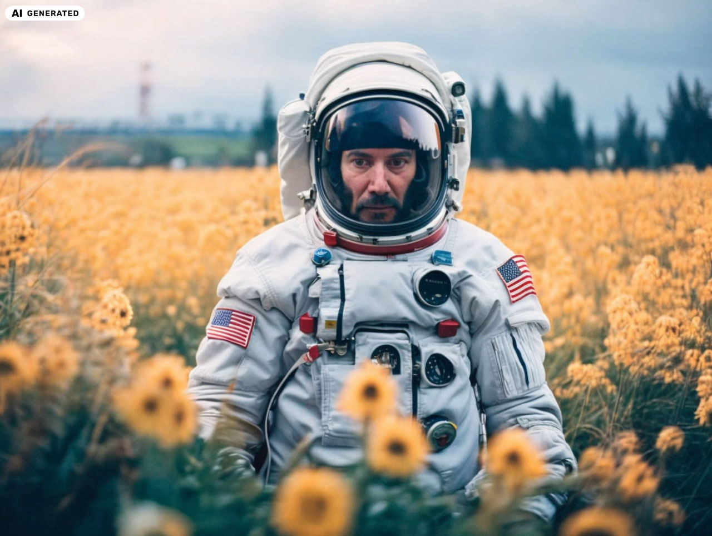
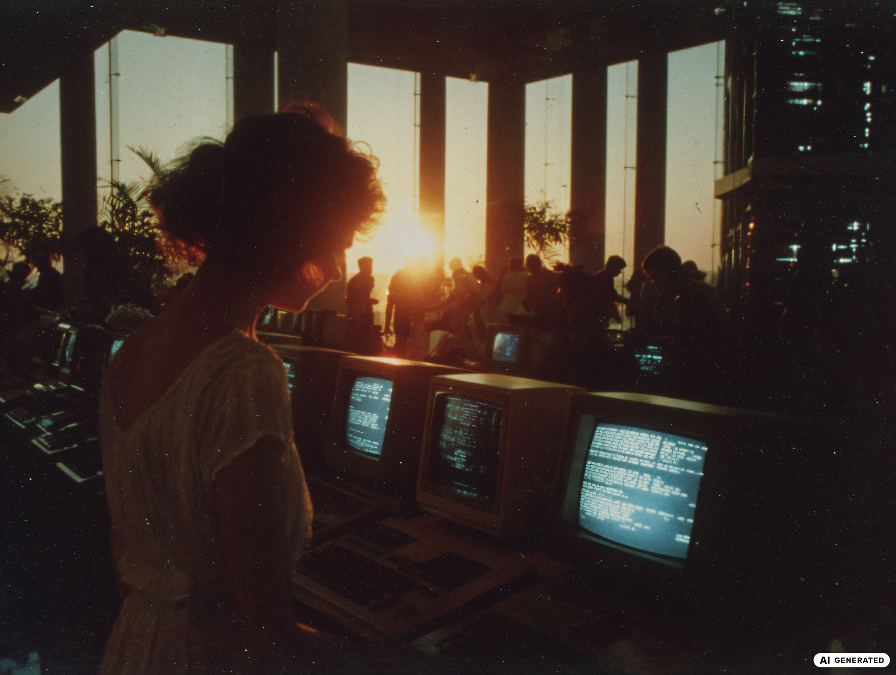
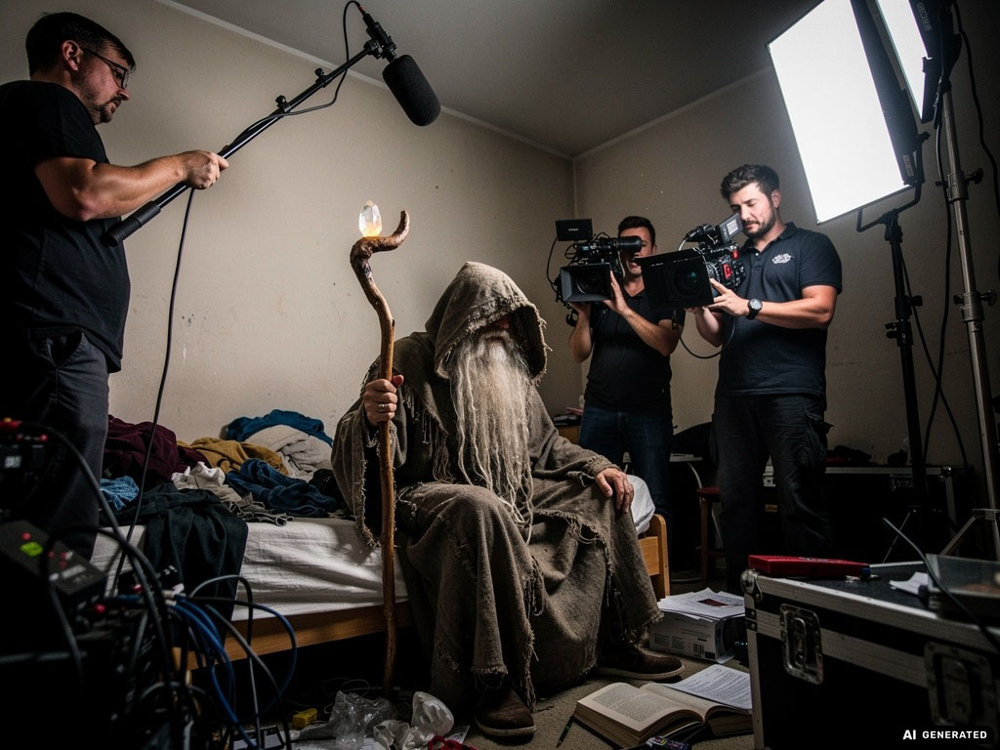
In 2022, a major revolution swept across generative AI. The catalyst was the transformer architecture, a neural network paradigm developed by Google Brain. Transformers specialize in natural language understanding and generation, processing text holistically and capturing rich contextual relationships rather than examining words strictly sequentially. They weigh crucial elements in language using self-attention mechanisms.
Another major breakthrough arrived with diffusion models. These allow AI systems to synthesize visuals from descriptive prompts. Rather than assembling predefined assets, a diffusion model initiates with pure gaussian noise and iteratively refines it across calculation steps. Guided by learned statistical distributions, the system denoises the representation until it matches the requested concepts. More sampling steps typically yield richer texture, coherence, and fidelity.
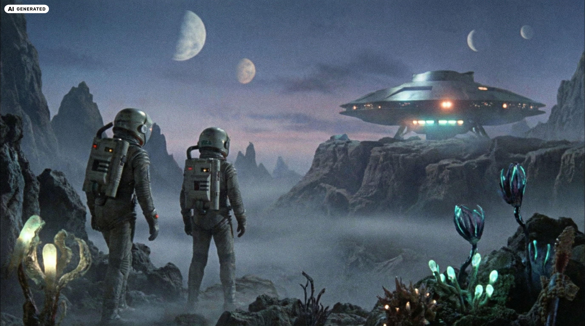
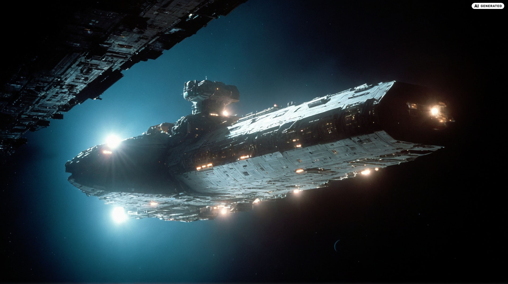
Following the breakthrough of ChatGPT, I extensively examined diverse large language models (LLMs) — such as the GPT family, Llama, Alpaca, and others — honing prompt engineering methodologies, and dedicating extensive time to image synthesis across Stable Diffusion, DALL-E 2/3, and Midjourney.
With the emergence of Midjourney, Stable Diffusion, Nano Banana, Minimax Image-01, and similar generative tools, I spoke with numerous artists and creators regarding how these technologies alter creative professions and how they can be leveraged meaningfully in production workflows.
I have been particularly active within the Stable Diffusion ecosystem. I fine-tuned bespoke models with custom datasets and my own photographic archives, teaching models specific aesthetic signatures — especially the distinct visual atmosphere of 1980s science fiction cinema.
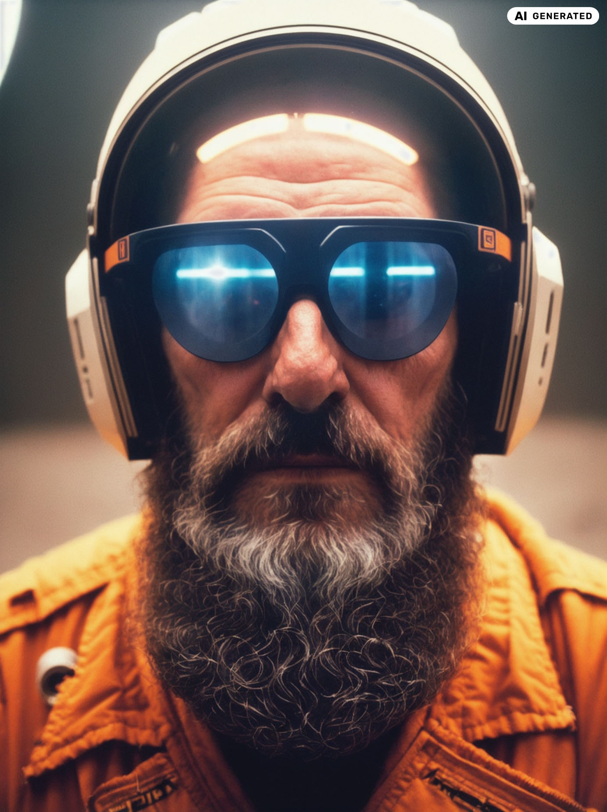
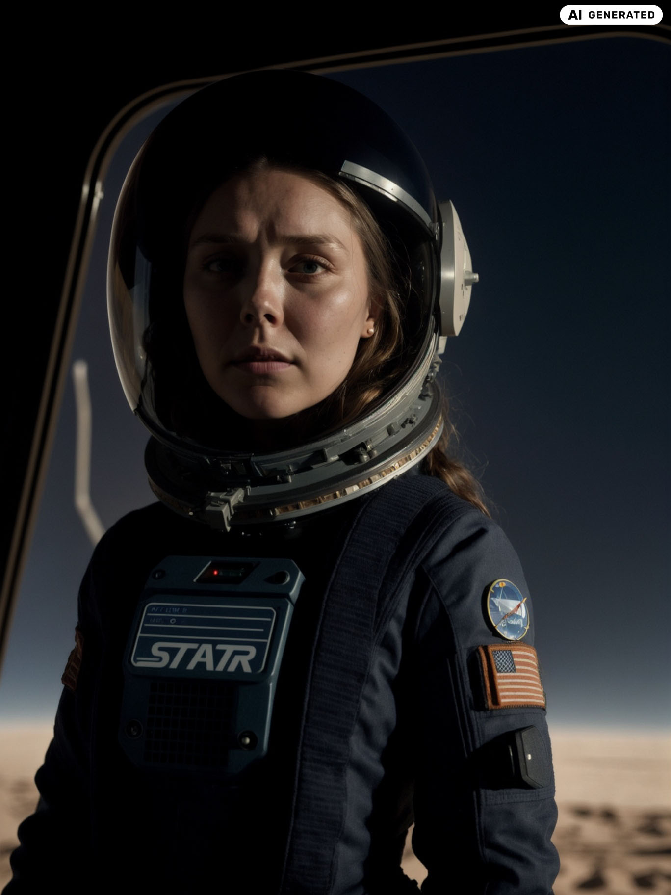
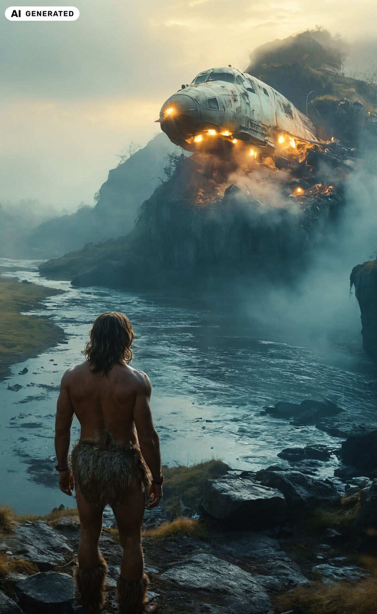
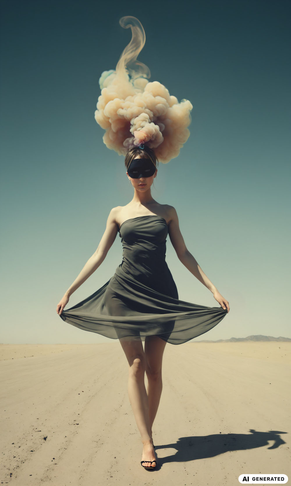
Using Stable Diffusion, I also produced concept art and visual inspiration for an indie game development studio working on a surreal post-apocalyptic title. Furthermore, I routinely advise media organizations, editorial houses, and agencies navigating generative tools.
I also share my knowledge through hands-on workshops and keynotes: Among others, I have conducted AI workshops for Max Planck Information and Technology (MaxIT), presented on AI agents and Generative AI at the AI Camp hosted by Medien.Bayern, and spoke at the Festival der Zukunft 2026 about the misuse of AI tools to spread AI ragebait slop and disinformation. Occasionally, I participate in panel discussions, such as at Webedia, sharing my perspectives.
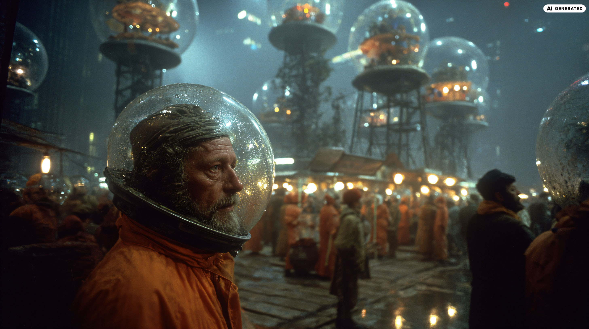
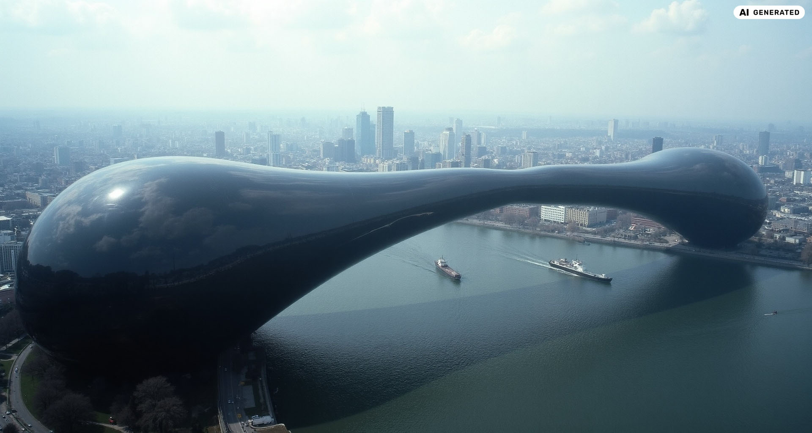
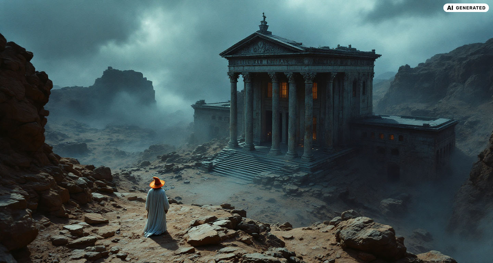
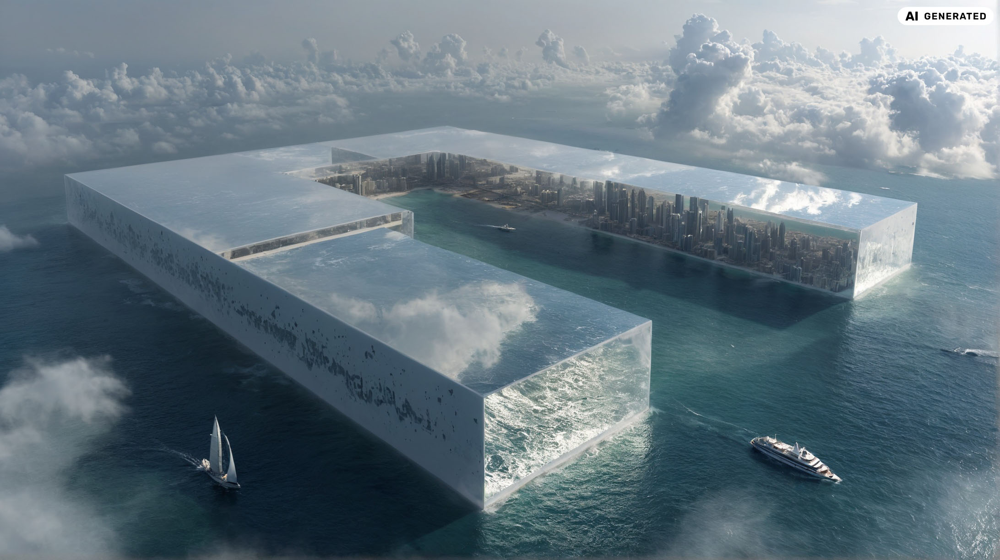
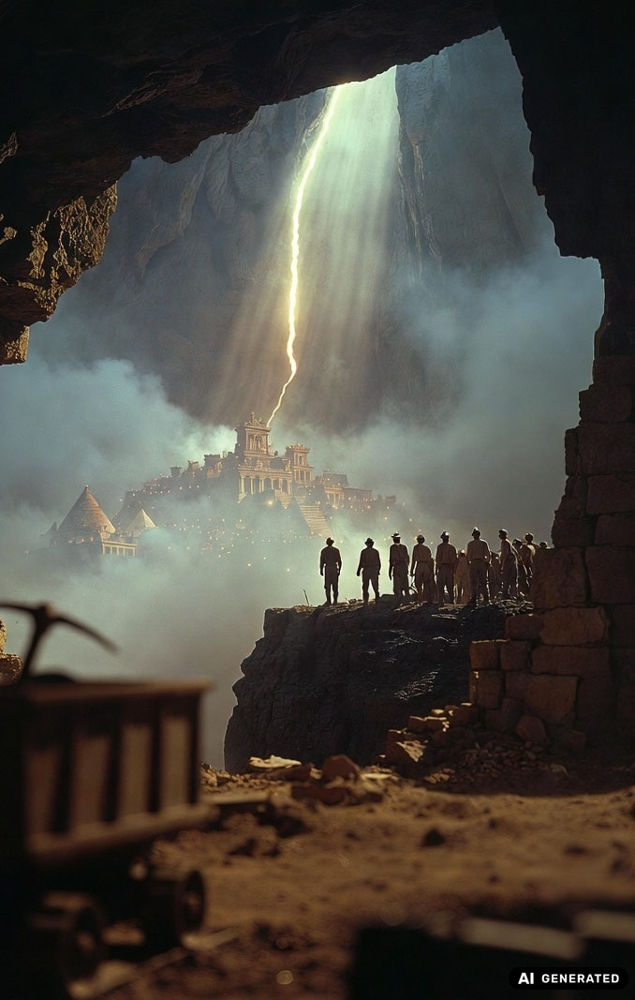
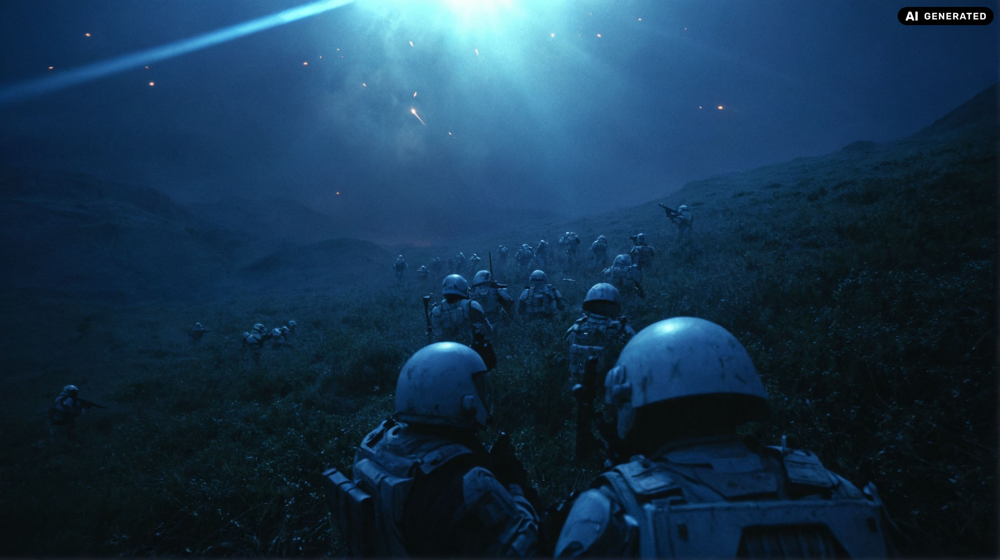
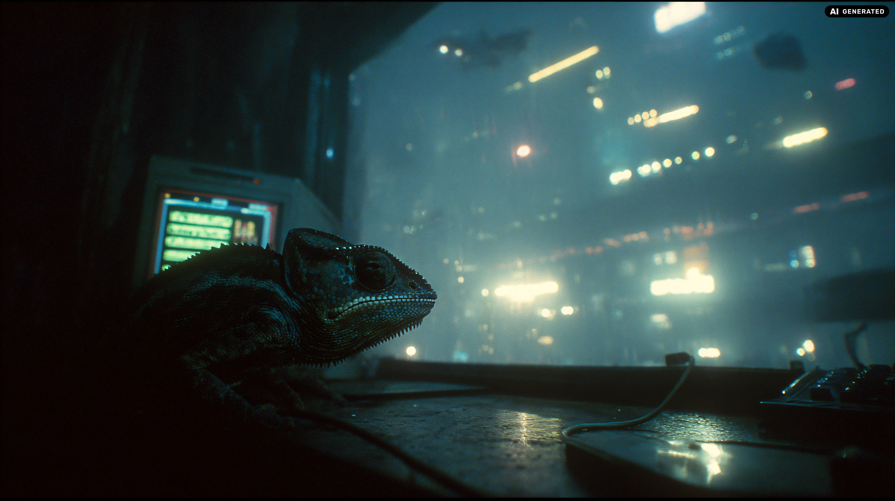
40 years ago, a television series premiered that shaped society and politics. Fascist aliens, disinformation, and media power.
He doubted reality and believed in simulated universes. On the author whose mind made The Matrix possible.
Learning deepfake production in two weeks: A surprising look at the accessibility of modern synthesis tools.
Robotic chickens, fedoras, and a roadside picnic. The chaotic creation history of the cult Ukrainian shooter.
Where did game streaming originate — and how did Nvidia change the landscape?
A grand engineering blueprint from the 1970s designed to reach other star systems.